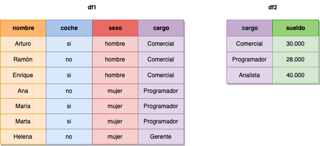

Trabajar con varios DataFrames#
Cuando trabajamos con más de un DataFrame, lo que solemos querer es unirlos. Pandas cuenta con las funcion es concat() y merge() para poder unir cualquier DataFrame de distintas maneras. La documentación de pandas ofrece una guía muy detallada de todo lo que podemos hacer, pero aquí veremos una pequeña introducción.
Concat#
Concat permite fusionar dos DataFrames tanto a nivel de fila como a nivel de columna:
pandas.melt(frame, id_vars=None, value_vars=None, var_name=None, value_name='value', col_level=None, ignore_index=True)
En el caso de querer unirla a niovel de filas, el resultado será un nuevo DataFrame con todas las filas de los DataFrames unidos:

Por otro lado, so lo unimos a nivel de columna, el resultado será un nuevo DataFrame con todas las columnas de los anteriores concatenadas:
Vamos a ver un par de ejemplos partiendo de los siguientes DataFrames:
import pandas as pd
df1 = pd.DataFrame({'A': ["A0", "A1", "A2", "A3"],
'B': ["B0", "B1", "B2", "B3"],
'C': ["C0", "C1", "C2", "C3"]})
df1
| A | B | C | |
|---|---|---|---|
| 0 | A0 | B0 | C0 |
| 1 | A1 | B1 | C1 |
| 2 | A2 | B2 | C2 |
| 3 | A3 | B3 | C3 |
df2 = pd.DataFrame({'A': ["A4", "A5", "A6", "A7"],
'B': ["B4", "B5", "B6", "B7"],
'C': ["C4", "C5", "C6", "C7"]})
df2
| A | B | C | |
|---|---|---|---|
| 0 | A4 | B4 | C4 |
| 1 | A5 | B5 | C5 |
| 2 | A6 | B6 | C6 |
| 3 | A7 | B7 | C7 |
df3 = pd.DataFrame({'D': ["D0", "D1", "D2", "D3"],
'E': ["E0", "E1", "E2", "E3"],
'F': ["F0", "F1", "F2", "F3"]})
df3
| D | E | F | |
|---|---|---|---|
| 0 | D0 | E0 | F0 |
| 1 | D1 | E1 | F1 |
| 2 | D2 | E2 | F2 |
| 3 | D3 | E3 | F3 |
Lo primero que vamos a hacer es unir los dos primeros DataFrames a nivel de fila, generando un nuevo DataFrame con todas las filas que lo componen:
concat_df = pd.concat((df1, df2), axis=0)
concat_df
| A | B | C | |
|---|---|---|---|
| 0 | A0 | B0 | C0 |
| 1 | A1 | B1 | C1 |
| 2 | A2 | B2 | C2 |
| 3 | A3 | B3 | C3 |
| 0 | A4 | B4 | C4 |
| 1 | A5 | B5 | C5 |
| 2 | A6 | B6 | C6 |
| 3 | A7 | B7 | C7 |
A continuación, vamos a unir el primer DataFrame y el segundo a nivel de columna:
concat_df = pd.concat((df1, df3), axis=1)
concat_df
| A | B | C | D | E | F | |
|---|---|---|---|---|---|---|
| 0 | A0 | B0 | C0 | D0 | E0 | F0 |
| 1 | A1 | B1 | C1 | D1 | E1 | F1 |
| 2 | A2 | B2 | C2 | D2 | E2 | F2 |
| 3 | A3 | B3 | C3 | D3 | E3 | F3 |
Cabe destacar que ne los ejemplos solo se han unido dos DataFrames, pero que en la práctica puedes unir tantos como quieras.
Merge#
El método merge nos permite unir dos dataframes como si utilizaramos un join con tablas SQL.
DataFrame.merge(right, how='inner', on=None, left_on=None, right_on=None, left_index=False, right_index=False, sort=False, suffixes=('_x', '_y'), copy=None, indicator=False, validate=None)
Las operaciones permitidas son:
inner joinouter joinleft joinright join
Para este apartado vamos a contar con los siguientes dataframes:

df1 = pd.DataFrame({"nombre": ['Arturo', 'Ramón', 'Enrique', 'Ana', 'María', 'Marta', 'Helena'],
'coche': ['si', 'no', 'si', 'no', 'si', 'si', 'no'],
'sexo': ['hombre', 'hombre', 'hombre', 'mujer', 'mujer', 'mujer', 'mujer'],
'cargo': ['Comercial', 'Comercial', 'Comercial', 'Programador', 'Programador', 'Programador', 'Gerente']})
df1
| nombre | coche | sexo | cargo | |
|---|---|---|---|---|
| 0 | Arturo | si | hombre | Comercial |
| 1 | Ramón | no | hombre | Comercial |
| 2 | Enrique | si | hombre | Comercial |
| 3 | Ana | no | mujer | Programador |
| 4 | María | si | mujer | Programador |
| 5 | Marta | si | mujer | Programador |
| 6 | Helena | no | mujer | Gerente |
df2 = pd.DataFrame({'cargo': ['Comercial', 'Programador', 'Analista'],
'salario': [30000, 28000, 40000]})
df2
| cargo | salario | |
|---|---|---|
| 0 | Comercial | 30000 |
| 1 | Programador | 28000 |
| 2 | Analista | 40000 |
Inner Join#
Esta cláusula busca coincidencias entre 2 dataframes, en función a una columna que tienen en común y que debe ser indicada:
pd.merge(df1, df2, how="inner", on="cargo")
| nombre | coche | sexo | cargo | salario | |
|---|---|---|---|---|---|
| 0 | Arturo | si | hombre | Comercial | 30000 |
| 1 | Ramón | no | hombre | Comercial | 30000 |
| 2 | Enrique | si | hombre | Comercial | 30000 |
| 3 | Ana | no | mujer | Programador | 28000 |
| 4 | María | si | mujer | Programador | 28000 |
| 5 | Marta | si | mujer | Programador | 28000 |
Outer join#
El outer join obtendrá todas las filas de df1y df2, y colocará NaN en aquellos elementos que no estén disponibles:
pd.merge(df1, df2, how="outer", on="cargo")
| nombre | coche | sexo | cargo | salario | |
|---|---|---|---|---|---|
| 0 | Arturo | si | hombre | Comercial | 30000.0 |
| 1 | Ramón | no | hombre | Comercial | 30000.0 |
| 2 | Enrique | si | hombre | Comercial | 30000.0 |
| 3 | Ana | no | mujer | Programador | 28000.0 |
| 4 | María | si | mujer | Programador | 28000.0 |
| 5 | Marta | si | mujer | Programador | 28000.0 |
| 6 | Helena | no | mujer | Gerente | NaN |
| 7 | NaN | NaN | NaN | Analista | 40000.0 |
Left join#
El left join devuelve todas las filas del df1 y todas las columnas del df1 y df2, añadiendo NaN donde no haya datos en las columnas del df2:
pd.merge(df1, df2, how="left", on="cargo")
| nombre | coche | sexo | cargo | salario | |
|---|---|---|---|---|---|
| 0 | Arturo | si | hombre | Comercial | 30000.0 |
| 1 | Ramón | no | hombre | Comercial | 30000.0 |
| 2 | Enrique | si | hombre | Comercial | 30000.0 |
| 3 | Ana | no | mujer | Programador | 28000.0 |
| 4 | María | si | mujer | Programador | 28000.0 |
| 5 | Marta | si | mujer | Programador | 28000.0 |
| 6 | Helena | no | mujer | Gerente | NaN |
Right join#
Es la operación inversa a left join. Devuelve todas las filas del df1 y todas las columnas del df1 y df2, añadiendo NaN donde no haya datos en las columnas del df1:
pd.merge(df1, df2, how="right", on="cargo")
| nombre | coche | sexo | cargo | salario | |
|---|---|---|---|---|---|
| 0 | Arturo | si | hombre | Comercial | 30000 |
| 1 | Ramón | no | hombre | Comercial | 30000 |
| 2 | Enrique | si | hombre | Comercial | 30000 |
| 3 | Ana | no | mujer | Programador | 28000 |
| 4 | María | si | mujer | Programador | 28000 |
| 5 | Marta | si | mujer | Programador | 28000 |
| 6 | NaN | NaN | NaN | Analista | 40000 |
Indicator#
Existe un parámetro adicional llamado indicator. Este parámetro, por defecto está a False, pero si lo cambiamos a True se creará una nueva columna indicando en que dataframe se han encontrado las coincidencias de la clave indicada:
pd.merge(df1, df2, how="outer", on="cargo", indicator=True)
| nombre | coche | sexo | cargo | salario | _merge | |
|---|---|---|---|---|---|---|
| 0 | Arturo | si | hombre | Comercial | 30000.0 | both |
| 1 | Ramón | no | hombre | Comercial | 30000.0 | both |
| 2 | Enrique | si | hombre | Comercial | 30000.0 | both |
| 3 | Ana | no | mujer | Programador | 28000.0 | both |
| 4 | María | si | mujer | Programador | 28000.0 | both |
| 5 | Marta | si | mujer | Programador | 28000.0 | both |
| 6 | Helena | no | mujer | Gerente | NaN | left_only |
| 7 | NaN | NaN | NaN | Analista | 40000.0 | right_only |